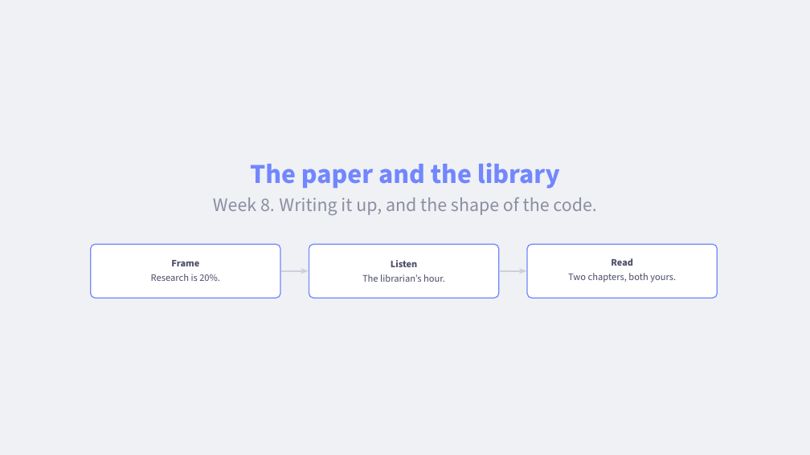
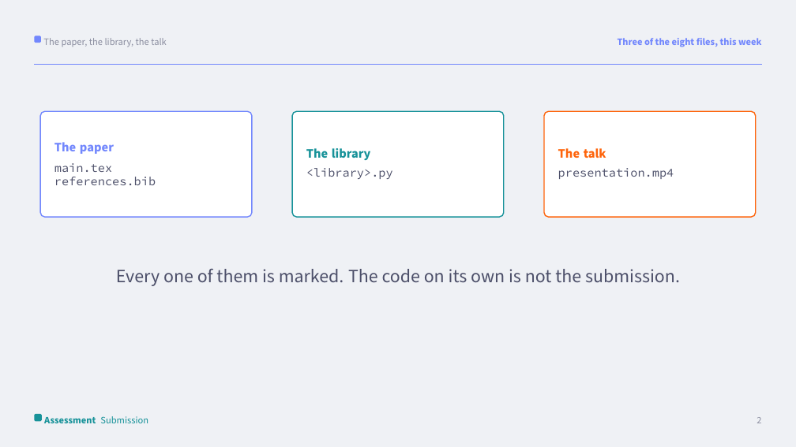
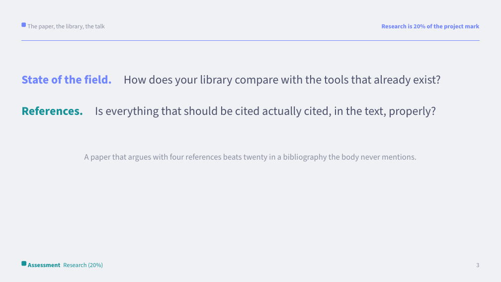
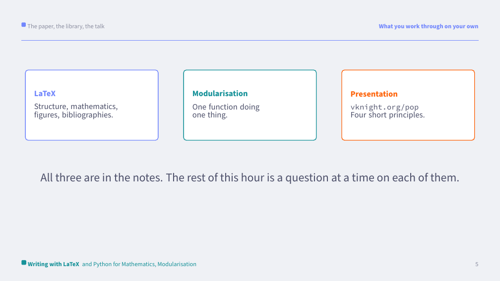
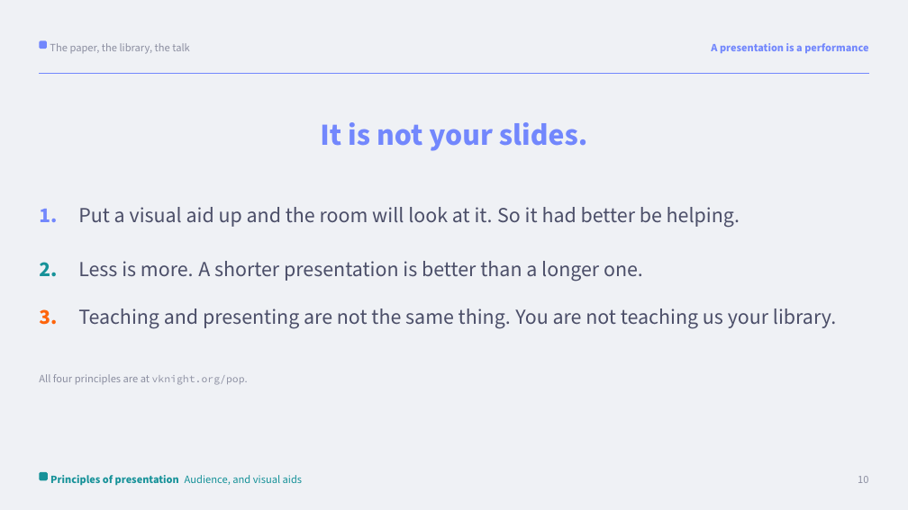
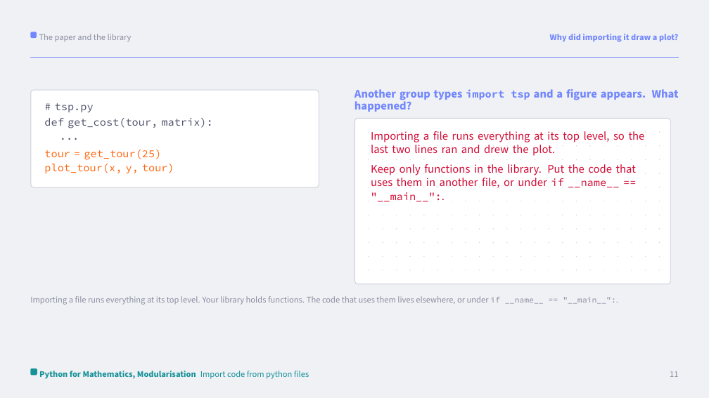
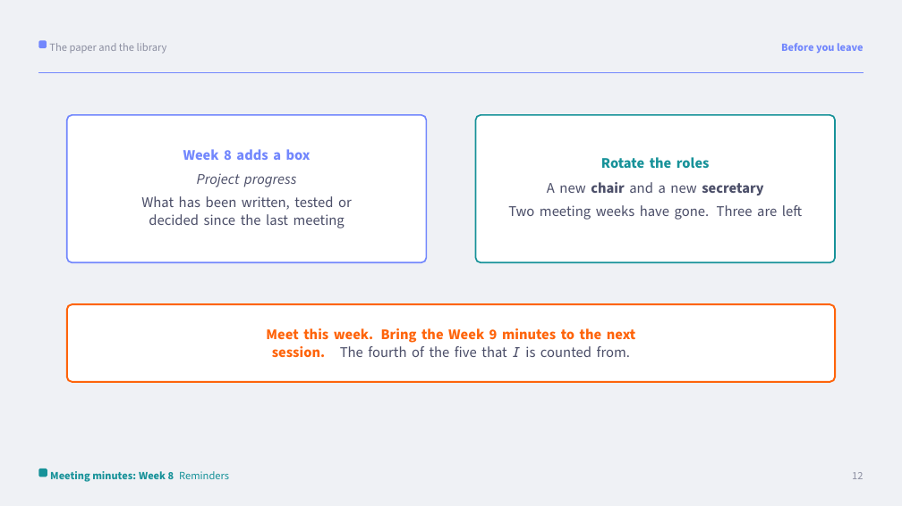
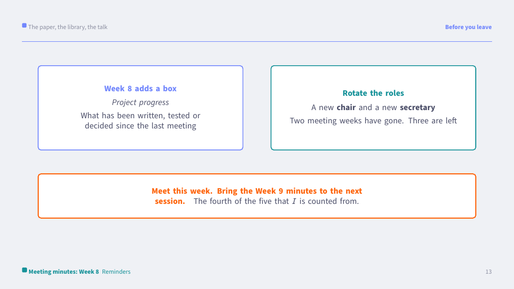

LaTeX and Writing Mathematics
Run sheet
One row per slide, to glance at while the deck is on screen. The reasoning behind every answer is in the sections below. Deck: /deck/latex-and-writing-mathematics/main.pdf.
| Slide | On screen | What you fill in or say |
|---|---|---|
| 2 | Three of the eight files, this week | The paper, the library, the talk. All three are marked, and the code alone is not the submission |
| 3 | Research is 20% of the project mark | Two things only: state of the field, and references |
| 4 | Your state of the field, in one question | Push for named tools: numpy, scipy, sympy, something on PyPI. 'There is nothing else like it' is the answer that scores worst |
| 5 | What you work through on your own | LaTeX, modularisation, and the principles of presentation at vknight.org/pop |
| 6 | Where is the title? | \maketitle is missing. The preamble says what the title is; \maketitle puts it on the page |
| 7 | Why is my citation a question mark? | The key does not match: the entry is knight2016 and the paper cites knight2017. A missing \bibliography does the same. Second question: a figure is a float, so 'the picture below' can be false where \ref never is |
| 8 | What would you call this? | Three functions hiding in one: get_mean, get_population_variance, and its square root. process is not a name |
| 9 | Now you want the total with the tip | Nothing is reusable: the tip is computed inside. Split into add_tip and get_bill_share and both become usable and testable on their own |
| 10 | A presentation is a performance | It is not your slides. They will look at whatever you put up; less is more; teaching is not presenting. Point at vknight.org/pop |
| 11 | Watch this one | Just the invitation, so the rest is yours to annotate. Take what they noticed from the room afterwards, not during |
| 12 | What yours has to do | Fifteen minutes, recorded, and marked with the paper under Communication at 30%. Who speaks is theirs to decide, on whatever makes the best talk |
| 13 | Before you leave | The project progress box; rotate the roles; Week 9 minutes to the next session. Fourth of five |
Format
A group-work week, and the hour is ours. The deck covers the three things this week has to carry: the paper, the library and the talk. None of the three is lectured; students work through the LaTeX notes, the modularisation chapter and the principles of presentation on their own, and the hour puts the parts that catch people in front of the room.
The subject librarian's session on researching sources has run in this slot in previous years. If they are able to come, hand the hour over and see If the librarian comes below.
In class session
The hour is built around four write-on moments and one recording. Take the questions from the room before you give any answer: the whole deck is questions with space to write, and the answers are on the slides only in the facilitator build.
Show one past presentation on slide 13. Pick a real submission for this exact coursework, at a middling rather than a polished standard, so the failures are visible and nameable. Confirm the group consented to it being shown to later years, and say in the room that it is shown with permission. Students are noticeably more willing to be in next year's set when they have seen it done that way.
A full recording is fifteen minutes, which is a third of the hour. If you want the state-of-the-field exercise on slide 4 as well, show the opening five minutes instead and say why you are stopping it. The timings below assume the excerpt.
The presentation material here is deliberately a taster. Week 9 is the session that does it properly, with two or three recordings, the storyboard and the Communication criteria, so resist running that discussion to ground today.
The deck
There is a write-on deck at /deck/latex-and-writing-mathematics/main.pdf. Thirteen slides, built to fill the hour.
| Section | Minutes |
|---|---|
| Slides 2 and 3: the three files, and why Research is 20% | 5 |
| Slide 4: name three tools that already exist | 7 |
| Slide 5: what you read on your own | 1 |
| Slides 6 and 7: the two LaTeX questions | 6 |
| Slides 8 and 9: modularisation | 8 |
| Slide 10: a presentation is a performance | 3 |
| Slide 11: watch one, and fill the three lines in | 12 |
| Slide 12: what yours has to do | 3 |
| Slide 13: before you leave | 3 |
If you are running late, cut slide 4 rather than the recording. Slide 13 is the one not to cut: it is the only place the week's minutes get mentioned.
What students work through on their own
- LaTeX notes: the tutorials covering the document structure, mathematics, figures, tables and bibliographies.
- 'Some Guidelines for Good Mathematical Writing' by Francis Su
-
Principles of presentation: short, and the week they should read it is this one, not the week before they record.
They also need references.bib, which is one of the eight submitted
files. The LaTeX notes teach the mechanics of citing; slide 4 is where
they work out what is worth citing.
This week's Python
The Python chapter this week is modularisation, and slides 8 and 9 are the same argument at two strengths, so take them in order.
Slide 8, what would you call this? Nothing sensible, which is the
answer. process names the fact that it is code, not what it does, and
no better name exists because it is doing three separate things: adding
up the values, dividing to get the mean, and then computing the mean
squared deviation and its root. Pulled apart they are get_mean,
get_population_variance and get_standard_deviation, which are the
names the chapter's own solutions use, and each is a line or two.
Let the room offer names before you give the answer. Every suggestion will either be wrong or contain 'and', which is the point, and it makes the next slide land because there the name is not the problem.
Slide 9, what can you reuse? Nothing, and that is the answer. The
tip is worked out on the first line and then immediately divided away,
so a caller who wants the bill with the tip added but not split has no
way to ask for it. Splitting gives add_tip, which returns a total
with the tip included, and get_bill_share, which divides a total by
the number of payers, and both are then usable and testable alone.
Be ready for the obvious objection, because it is correct: this
function does one thing. It computes one value, and bill_share_with_tip
would name it perfectly well without the word 'and'. So do not run the
'and' heuristic as a test the function fails. The honest version is
that 'and' in a name is a hint to look inside, and what it finds here
is a useful intermediate value that no caller can reach. That is the
argument for splitting, and it is the one the chapter makes: the split
version lets you write each step out explicitly. Resist giving a line
count; the chapter is explicit that arbitrary line limits often add
more complexity than they remove.
Questions that come up
"Can we use Overleaf?" Yes. It removes the installation problem entirely and supports collaboration, which matters for a group paper. The notes cover a local installation for anyone who prefers one.
"How many references do we need?" There is no number. The criterion is whether everything that should be cited is cited, and whether the state of the field is accurate. A paper with four well-integrated references scores better than one with twenty in a bibliography the body never refers to.
"Does the paper have to be three pages?" Yes, and it is a limit worth taking seriously: a great deal of the writing mark is about organisation, and organising three pages is the exercise.
Communications
Before class
Send the following message before class:
Hi all,
This week's class covers the three things you hand in that are not
the code: the paper, the way the library is structured, and the
presentation.
We will watch a presentation recorded by a group in a previous year
for this exact coursework, so you can see what fifteen minutes
actually looks like.
Nothing to prepare. If you have started your paper and something
has not compiled, bring it.
Please get in touch if I can assist with anything,
Vince
After class
Send the following message after class:
Hi all,
What you work through on your own this week:
- The LaTeX notes: https://vknight.org/tex/
- Modularisation of code:
https://vknight.org/cfm/topics/modularisation-of-code.html
- Principles of presentation: https://vknight.org/pop/
- Guidelines for good mathematical writing:
https://vknight.org/cfm/assets/pdf/writing-mathematics-guidelines/main.pdf
Three things from today worth repeating:
1. Your references.bib is one of the eight files, and the
references are part of the Research criterion. Four references
the paper argues with beat twenty it never mentions.
2. Modular does not mean many files. You hand in one library file;
what matters is that each function does one thing you can name.
3. The presentation is fifteen minutes, recorded, and every member
speaks. It is marked together with the paper.
Please get in touch if I can assist with anything,
Vince
Answers for the deck
Slide 4, name three tools. Every year a group says there is nothing
else like their library. It is almost never true, and it is the answer
that scores worst, because the criterion is explicitly about how the
software compares with commonly used packages. Push for named tools:
numpy, scipy, sympy, a specific library on PyPI, whatever their
A-level teacher used. What theirs does differently can be small and
honest, such as handling one case in a way the general tool does not
make obvious.
Slide 6, where is the title? \maketitle is missing. The preamble
says what the title is; \maketitle is what puts it on the page. This
one catches almost everybody once.
Slide 7, why is my citation a question mark? Everyone is on
Overleaf, so the build itself is not the problem: Overleaf runs
bibtex and the repeated pdflatex passes for them. What is left is
the key. The entry on the slide is knight2016 and the paper cites
knight2017, so there is nothing for LaTeX to typeset and it prints
[?]. The other common cause is no \bibliography{references} in the
document at all, which gives the same symptom. A Figure ?? cross
reference is the same story with a \label that does not match.
The second question on that slide is a different kind of mistake. A
figure is a float, so LaTeX puts it where it fits, which may be the
next page or the one before. 'In the picture below' is therefore
sometimes simply false, where Figure~\ref{...} is always true. The
tilde stops a line break between the word and the number.
Slide 10, a presentation is a performance. Nothing to elicit, but
do not read the three claims out and move on. The one that lands is
the first: whatever is on the screen is what the room looks at, so a
slide of dense text means nobody is listening to the speaker. The
honest version of the headline is that if the audience could get
everything from the visual aids without you, you have written a
document rather than prepared a talk. Point at vknight.org/pop and
say it takes ten minutes.
Slide 11, watch this one. The slide is deliberately almost empty, so there is room to write on it while the discussion runs. Three questions are worth putting to the room afterwards rather than during, and they are the ones to write up as they are answered:
- How many minutes passed before the library was mentioned? This usually produces a number that surprises the room.
- Were the visual aids doing work, or were they a transcript?
- What did you learn that the README would not have told you? This is the one that separates a presentation from a document read aloud: if the honest answer is nothing, the talk had no reason to exist.
Resist giving a band today; that is Week 9's job.
Slide 12, what yours has to do. Nothing to elicit. The card worth
pausing on is who speaks: that is the group's decision, and the thing
to decide it on is what makes the best talk. Say plainly that nobody
has to speak in order to be credited, because who did what is recorded
in contribution.md, and that a group splitting the time four ways out
of fairness usually produces a worse presentation than one that plays
to its strengths. The fifteen minutes is a target rather than a limit:
substantially under suggests the work is thin, and substantially over
usually means the design decisions got squeezed out at the end, which
is the most valuable part.
If the librarian comes
Hand the hour over. Use slides 2 to 4 of the main deck as the two minutes before you do, since slide 3 connects their session to the Research criterion and slide 4 is the exercise their session is about. Then stay, and take questions at the end with slides 6 to 11.
That leaves presentation uncovered this week. It is the least urgent of
the three, because Week 9 is given over to it, so the cost is only that
students start thinking about the recording a week later than they
otherwise would. Mention vknight.org/pop on the way out.
A third option: the sources deck
There is also a standalone deck at /deck/researching-sources/main.pdf. It teaches the Research criterion properly, which neither of the other two shapes does: what gets cited, where to look, judging a source, BibTeX, and writing the state of the field. It was built for the case where the librarian cancels, and it is still the better choice if you would rather cover sources than presentation. Project it instead of the main deck rather than alongside it.
The hour is built around two pieces of group work, slides 5 and 11, which between them take about half of it. Everything else is there to set them up. If you are short of time, cut slide 7 and shorten slide 4, and keep slide 11 whatever happens, because a group that leaves having written its state of the field has done the thing the Research mark asks for.
| Section | Minutes |
|---|---|
| Slides 2 and 3: why this is 20%, and what gets cited | 7 |
| Slide 4: where to look | 5 |
| Slide 5: name three tools that already exist | 8 |
| Slides 6 and 7: judging a source | 9 |
| Slides 8 to 10: BibTeX, the four commands, a live reference | 10 |
| Slide 11: write the state of the field | 10 |
| Slide 12: before you leave | 3 |
Run sheet
| Slide | On screen | What you fill in or say |
|---|---|---|
| 2 | Research is 20% of the project mark | State of the field, and references. The component groups lose most marks on, and the cheapest to fix |
| 3 | Four things you will need to cite | Software like yours, the mathematics, the method, and what you built on. Ask which they already have; most have none |
| 4 | Where to look | The library discovery service, Scholar and arXiv, PyPI and the project's own docs, and JOSS. A search is where you start, not what you cite |
| 5 | Your state of the field, in one question | Push for named tools. 'There is nothing else like it' scores worst. Walk the room while they write |
| 6 | Is it worth citing? | Who wrote it, is it current, who else cites it, can you check it. The last one is the real test: unverified is repeating, not citing |
| 7 | Same claim, three places | All three can be cited, for different things. The docs for behaviour, the textbook for the mathematics, the forum answer for neither |
| 8 | What a reference actually is | Nobody types it. Scholar's 'Cite', the DOI, or Zotero gives you the BibTeX to paste into references.bib |
| 9 | Then four commands, in order | pdflatex, bibtex, pdflatex, pdflatex. Overleaf does all four; a local install does not |
| 10 | A reference doing work | Four references you argue with beat twenty you list. The top card is from the markov example paper |
| 11 | Write the paragraph now | Three or four sentences: what exists, what it does, what yours does differently, why that is worth doing. It goes in their introduction |
| 12 | Before you leave | One references.bib entry each this week; rotate the roles; Week 9 minutes to the next session |
Answers for the sources deck
Slide 3, which of the four do you have? Usually none, which is the
point of asking. The fourth is the easy win: every group is building on
something, sympy or numpy or the standard library, and that is a
citation they can add this week without reading anything new.
Slide 6, what does a good source look like? Named authors with an affiliation; a date or a version recent enough to still describe the software; a citation count or an obvious user base; and a claim you can check against something else. Students over-weight the first three. The fourth is the one that separates a reference they understand from one they are passing on.
Slide 7, which do you cite? This is not a ranking exercise, which is the trap. The documentation is the right citation for what the software does, since its authors wrote it. The textbook is the right citation for the mathematics. The forum answer is a good way to find either and is not a citation for either. Expect somebody to argue the forum answer is more useful, and agree: useful and citable are different properties.
Slide 11, the paragraph. Take two or three aloud at the end. The failure modes are a list of names with no comparison, and a claim of novelty that nobody believes. A workable shape is that tool X does A, tool Y does B, ours does C, and C is worth doing because of some property of the mathematics they care about.
The deck, filled in
Every page of the deck with its answers written in, built from the same source as the blank deck we project. Boxes that the room fills in for itself stay empty. Click a page to see it full size.

















